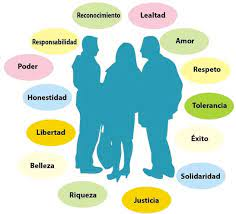

Son reglas o normas que orientan la acción de un ser humano cambiando las facultades espirituales racionales. Se trata de normas de carácter general y universal, como por ejemplo: amar al prójimo, no mentir, respetar la vida de las demás personas, etc.
Valores: Los valores son creencias o convicciones fundamentales que una persona o una sociedad considera importantes y dignos de apreciar. Representan los juicios de lo que es bueno, deseable o correcto. Los valores son más generales y abstractos, y suelen ser la base para la formación de principios y normas.
Principios: Los principios son reglas o pautas de comportamiento que se derivan de los valores. Son normas más específicas que guían las acciones y decisiones de las personas en diferentes contextos. Los principios suelen ser más prácticos y orientados a la acción.
Los principios son directrices éticas y morales que rigen el comportamiento de las personas y orientan sus acciones. Representan normas de conducta basadas en valores fundamentales y son utilizados para tomar decisiones y resolver conflictos éticos. Los principios suelen ser universales y aplicables en diversas situaciones.
Existen numerosos principios éticos y morales que son ampliamente reconocidos. Algunos ejemplos de principios importantes son:
Los valores son los principios, creencias o ideales que una persona o una sociedad considera importantes y dignos de apreciar. Representan las convicciones profundas que influyen en el comportamiento y las actitudes de las personas. Los valores proporcionan una base para tomar decisiones, establecer prioridades y evaluar las acciones.
Los valores pueden clasificarse de diferentes maneras, pero aquí presentamos una clasificación común:
Los valores son diversos y pueden variar según la cultura, la sociedad y las creencias individuales. A continuación, se presenta una lista no exhaustiva de algunos valores comunes:

Es importante destacar que cada persona y cada cultura pueden tener su propia jerarquía de valores y principios, y que los valores pueden evolucionar y cambiar a lo largo del tiempo. Los valores y principios proporcionan un marco ético y moral para guiar nuestras acciones y decisiones en la vida.